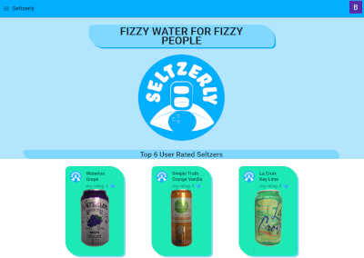
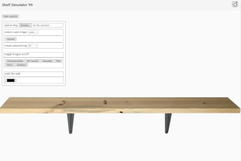

<div id="port-outer">
    <div id="port-inner">
        <div id="selterlyImgDiv">
            <a href="https://seltzerly.com" target="_blank">
                
            </a>
        </div>
        <div id="seltzerlyBlerbDiv">
            <p id="selzterlyBlerb">
                Seltzerly (seltzerly.com) is a web-app that allows users to rate and comment of different brands/flavors of 
                seltzer water. I developed this app on my own using Angular and JavaScipt/Typescipt as 
                well as Google Firebase for the backend/database. I also used the AngularFIre and Angular Material API's. 
                A few of the main feature are the following: Google Auth sign-in, Top six user rated seltzers, interactive 
                list of the Seltzers from the database, a component that allows user to comment, user profiles where user 
                comments can be edited, and upvoting. 
            </p>
        </div>
        <div id="shelfDiv">
            <a href="https://shelfsimulator.com" target="_blank">
                
            </a>
        </div>
        <div id="shelfBlerbDiv">
            <p id="shelfBlerb">
                Shelf Simulator '99 (shelfsimulator.com) is my shout out the the internet of yesteryear. It is a simple website that 
                is minimally styled. I wanted it to look like a website from the 90's. It allows user to place objects
                on a static shelf. I have included some objects from around my house from that era. Users
                can also upload their own images as well. Images can be removed and rotated. My hope was that people 
                could screen grab their shelves and make memes or backgrounds with them. It was built with Angular/JavaScript.
            </p>
        </div>
    </div>
</div>